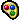
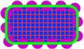
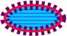
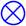
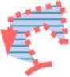
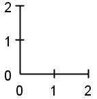
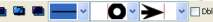

| LaTeXDraw Manual |
| System requirements |
| License |
| Features |
| LaTeXDraw 1.9 |
| Shapes |
| Graphicals Features |
| Exportation |
| Insert/import |
| Drawing properties |
| Convert Pictures |
| Template |
| Check Version |
| How to start |
ShapesThe Shapes
The Parameters of the ShapesYou can modify a shape by using the parameters frame that you can display by double clicking on the shape or by clicking on this button :. Then, the following frame must be displayed : 
You can also modify a figure with the toolbar of LaTeXDraw : 
You can especially modify :
Rectangle & SquareTo create a rectangle or a square use these button :  .
Press the left button and drag the mouse to enlarge the rectangle. .
Press the left button and drag the mouse to enlarge the rectangle.
Line To create a line, press the left button and drag the mouse to enlarge the line.
Ellipse & CircleTo create an ellipse/circle, press the left button and drag the mouse to enlarge the shape.
Bézier Curve To draw a Bézier Curve, a left click creates a point and a double left click or a right click stops the creation. You can move the points of references by selecting the figure and move the delimitors. You can equilibrate a Bézier curve with the button "equilibrate" in its parameters frame; all control points are recomputed in order to form a round shape. The "distance" field define the distance of the control points when they are equilibrate. A Bézier can be closed or open; when closed, a curve or a line joins the two extremities of the curve. Polygon To create an polygon, click with the rigth button and drag the mouse then click to create an other point, etc.
Triangle & Rhombus To create a triangle/Rhombus, press the left button and drag the mouse to enlarge the shape.
Grid To create a grid, do a right click in the draw panel; a frame of the parameters of the grid must appeared. A grid has a lots of parameters that you can change in this frame. A grid can not be resized with its delimitors, but you can change the parameters "unit" to enlarge each box of the grid. Arc To create an arc, press the left button and drag the mouse to enlarge the shape. There is three kind of arcs :
PointTo create a point, do a right click in the draw panel. It exists a lots of kind of point (crossed dot, square, bar, ...) that you can change in the list "dot style".
Free hand To use free hand, press the left button and drag the mouse to create points. Shape, created with free hand, can be either a curve or joined-lines; you can change that in the frame of parameters. Only few points are drawn compare to the number of created points; you can define the interval between each points with the field "interval". It can be closed or open; when closed a line joins the two extremities. Text To create a text, do a right click in the draw panel; a frame of the parameters of the text must appeared. You can enter the text in the field. The text can be bold, in italic and can use severals fonts and size. A text can not be resized with its delimitors. A text can be opaque and you can define the colour of the opacity. A text can be boxed by one or several boxes; a box can be a rectangle, an oval, an circle, an diamond or a triangle.  The frameSep parameter define the separation between the figure and the box. A box can be edited like every shape with the button "edit". The boxSep parameter is used for several boxes; it define if the size of the current box must be considered during the definition of the position and the size of the boxes. For several boxes:

Joined LinesTo create joined lines, go to the polygon section.
AxesAxe is one of the most complex figure of LaTeXDraw; its parameters are fully explain is the PSTricks documentation you can found on the LaTeXDraw page. All its features are no yet implemented; in LaTeXDraw 1.9, you will be able to customize the labels and to choose which package (definition of psaxes) you want to use (pst-plot or pstricks-add). The position of the bordersYou can change the position of the borders of some figures :
 The colorsYou can change the color of the borders, the interior of the figure, the hatching or of the double seperation with the parametres frame or with the toolbar :Filled/hatchedSome shapes can be filled or hatched, like rectangle, rhombus, ... To fill a shape, selected the checkbox "filled", the button to change the color of the interior of the shape must appeared.To hatch a figure, select a kind of hatching in the list in the toolbar or in the parameters frame. LaTeXDraw do not manage to angle of the hatching so, by default, the angle is 0. The ArrowsLines ans arcs can have arrows ; there are a lots of kind of arrows listed is the field like shown in the following pictures : The thicknessYou can change the thickness of a figure with the field "thickness :" of the toolbar or of the parameters frame. However, points do not have thickness but size which can be changed in the same field.The kind of the bordersThere is 3 kind of borders :
Like show in the following picture :  The double bordersSome figures can have double borders like rectangle, circle, ... For that, select the checkbox "dle bound.". The double borders are, in general, movable (inner, outer, middle). ShadowNow, a shape can have a shadow; a shape is defined by:

Colours shiftingTwo colours can be used to fill a shape; the shifting is defined by:
|
| Copyright(c) 2005-2006 - Arnaud BLOUIN - last changes : September 11 2006 |